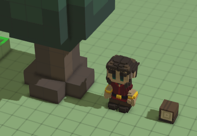
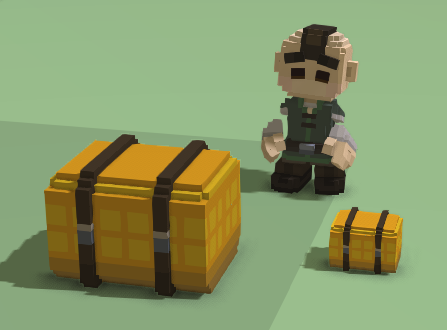
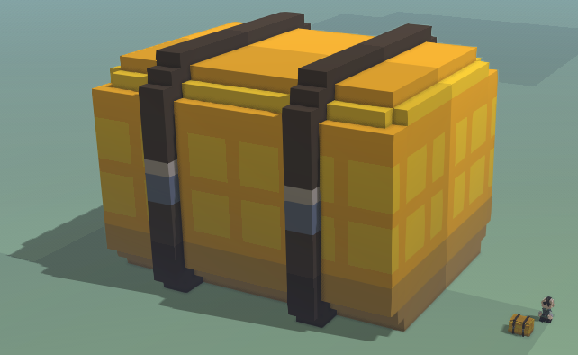

It doesn't matter how big an object is when you model it compared with other objects in the game, because we can change its scale from its JSON file.
If you don't specify the scale of an item, by default it's 0.1.
Trees and boulders have a scale of 1 (defined in their mixins), which means that each of the voxels in their models occupies 1 terrain block (you can see the size of a terrain block by opening the zones menu or the building menu, a grid will be displayed on the terrain).
Iconics are usually modeled with a size of 10x10x10 voxels, and since the default scale is 0.1, they fit perfectly in 1 block of terrain inside the game, which makes them align nicely in the stockpiles, and also fit in the hands of the hearthlings. Hearthlings themselves also have a 0.1 scale. Their face is 13 voxels wide, and you can see in the game that they barely occupy more than one terrain block of width. 
To change the scale of an object, we need to add the "render_info" component to its JSON file. For example, this is the wheat_pile_ghost.json file, which determines the aspect of a wheat pile once placed:
{
"mixins": "stonehearth:mixins:placed_object",
"components": {
"model_variants": {
"default": {
"models": [
"file(wheat_pile.qb)"
]
}
},
"render_info": {
"scale": 0.12
},
"mob": {
"model_origin": { "x": -0.55, "y": 0, "z": 0.5 },
"region_origin": { "x": 0.5, "y": 0, "z": 0.5 }
}
},
"entity_data": {
"stonehearth:catalog": {
"display_name": "i18n(stonehearth:entities.containers.wheat_pile.display_name)",
"description": "i18n(stonehearth:entities.containers.wheat_pile.description)",
"icon": "file(wheat_pile.png)",
"category": "storage",
"material_tags": "stockpile_cooking_ingredient crafted wheat_pile resource_pile"
}
}
}
Inside the "render_info" component we say "scale" : 0.12, which will make the object look slightly larger than with the default scale. With this, we can make items smaller (e.g.: "scale" : 0.05 - half as big as the default scale):  or larger (e.g.: "scale" : 2 - 20 times bigger than the default scale): 
The render_info component is also used for defining other properties such as animation tables, color maps, and material maps.
We can also test this in game. Select an entity, open the Lua console, and type this:
e:get_component('render_info'):set_scale(0.2)
then press Enter. Once you know the exact value that you want the scale to be, edit it in the JSON file and save the changes.